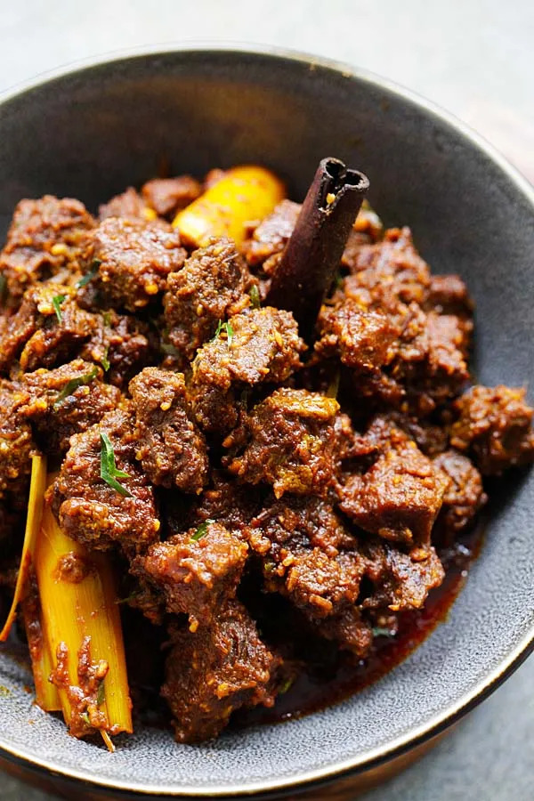

Beef Rendang

Description
made my first batch of rendang a few years ago when I kept seeing it in the top 3 items of every "Things to eat before you die" list. Easily one of the best things I've ever eaten, and so very very worth the effort.
The only advice I'd add here is towards the end of the cooking, don't leave it alone. It can go from wonderfully caramelized joy to burned sadness pretty quickly. Not a good time to go for a smoke break or something
- Reddit testimony
Ingredients
- 10 stalks lemongrass, blended
- 5cm ginger, pounded
- 5cm galangal, pounded
- 7cm turmeric, pounded
- 15 cili padi, blended
- 30 dried chillies, blended
- 10 red onions, blended
- 20 shallots, blended
- 2 heads garlic, blended
- 3 tbsp curry powder, mixed with water
- 1 1/2kg beef, cubed
- 2 tbsp gula Melaka
- salt to taste
- 1 heaped tbsp kerisik (toasted, pounded grated coconut)
- 3kg thick coconut milk
- 6 to 8 small limes, juiced
- a few daun limau purut (kaffir lime leaves)
Steps
- Step 1 -- In a wok, fry blended lemongrass, ginger, galangal, turmeric, cili padi and dried chillies without oil until all the liquid has evaporated. When the mixture is dry, add some cooking oil. Stir for awhile, then add blended onions, shallot and garlic. Stir until mixture is dry-ish.
- Step 2 -- Add curry powder, stir to combine, then add beef, gula Melaka and salt. Stir and allow the juices from the meat to seep out. Add kerisik and stir evenly into rendang.
- Step 3 -- When the meat juices have reduced, add thick coconut milk. Stir and let simmer for 30 to 40 minutes or until the mixture has thickened and there is not much liquid. Add the lime juice and daun limau purut and stir to mix evenly. Serve hot or let cool and freeze until required.